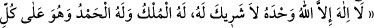
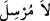

maslahatın gereği olarak yapar.
“Allah’ın insanlara açacağı herhangi bir rahmeti” ifâdesindeki “fetih” aslında
kapalılığı ortadan kaldırmak demektir. Örf de ise bu kelime “zafer” anlamına gelir.
Fetih, bir şeyin serbest bırakılıp salıverilmesine sebep olduğundan istiâre yoluyla
“irsal” mânâsına kullanılmıştır. Karinesi biraz ileride “fâtih” yerine “
kelimesinin getirilmesidir. İrşâd’da denilmiştir ki: Allah Teâlâ burada rahmetinin
gönderilmesini “fetih” olarak ifâde etmiştir. Bunun nedeni, onun hazinelerinin en
değerlisi ve en kıymetlisi olmasıdır. “Rahmet” kelimesinin nekre oluşu ise onun genel
oluşunu ve gizemini ifâde eder. Yâni Allah Teâlâ’nın nimet, sağlık, ilim, hikmet ve daha
başka rahmet hazinelerinden neyi açıp salıverse onu “tutup hapseden olamaz.” Zira
O’nun verdiği rahmete mahlukattan hiçbir kimse mani olamaz.
Denilmiştir ki fetih iki türlüdür. Biri ilâhî fetihtir ki bu, sevap ve güzel makamlara
vesîle olan ilim ve hidâyetlere ulaşmakla elde edilen bir zaferdir. Allah Teâlâ’nın “Biz
sana doğrusu apaçık bir fetih ihsan ettik” (el-Fetih 48/1) ve “Kalblerinde hastalık
bulunanların: «Başımıza bir felâketin gelmesinden korkuyoruz» diyerek onların
arasına koşuştuklarını görürsün. Umulur ki Allah bir fetih, yahut katından bir
emir getirecek de onlar, içlerinde gizledikleri şeyden dolayı pişman olacaklardır”
(el-Mâide 5/52) âyetleri bu anlamdadır.
Diğeri ise dünyevî fetihtir; bedeni zevk ve lezzetlere ulaşmakla elde edilen bir
zaferdir. Allah Teâlâ’ın “Allah’ın insanlara açacağı herhangi bir rahmeti tutup
hapseden olamaz” ve “O (peygamberlerin gönderildiği) ülkelerin halkı inansalar ve
(günahtan) sakınsalardı, elbette onların üstüne gökten ve yerden nice bereket
kapıları açardık, fakat yalanladılar, biz de ettikleri yüzünden onları yakalayıverdik”
(el-A’râf 7/96) âyetleri bu anlamdadır. Burada rahmeti ifâde etmek üzere kullanılan
zamirin bir yerde müzekker başka bir yerde müennes olarak getirilmesinin sebebi,
birincisinde merciin rahmet olarak tefsir edilmesi; ikincisinde ise merciin Allah
Teâlâ’nın –ister rahmet ister gazap olsun- tutup engellediği her şeye şâmil olması
nedeniyle mutlak olarak yorumlanmasıdır. Birinci tefsirde zamirin rahmetle
kayıtlanması, taallukta Allah’ın rahmetinin gazabını geçtiğini bildirmek içindir. Aksi
takdirde bizâtihî rahmet ve gazap Allah’ın sıfatları olup zat olarak birinin diğerini
geçmesi söz konusu değildir.
Muğîre b. Şu’be (r.a.)’dan rivayet edildiğine göre Peygamberimiz (s.a.) namazların
ardından şu duâyı okurdu: